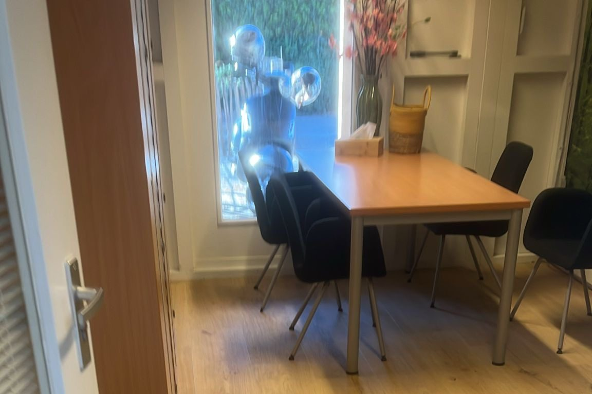

Kantoorschoonmaak
Schoonmaak voor kantoren die er altijd representatief uitzien
Een schoon kantoor werkt prettiger en maakt indruk op medewerkers en bezoekers. Yiska Cleaning verzorgt de dagelijkse en periodieke kantoorschoonmaak, volledig afgestemd op uw ritme en openingstijden.
- ✓ Werkplekken, bureaus en aanraakpunten
- ✓ Sanitair, pantry en kantines
- ✓ Vergaderruimtes en gemeenschappelijke ruimtes
- ✓ Schoonmaak buiten of binnen kantooruren

Kantoorschoonmaak